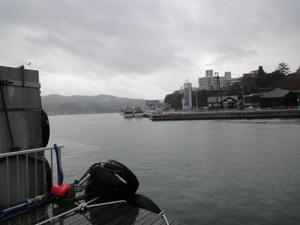
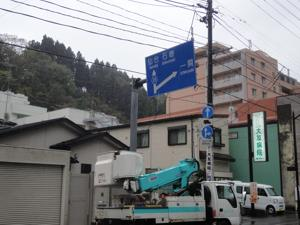
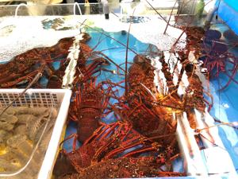
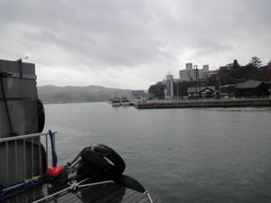
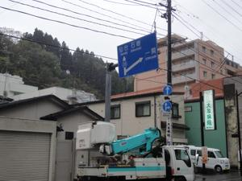
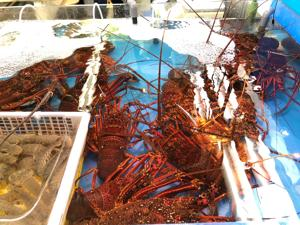

うるがいの話 ある日
最新:
海の町
うるがいとは 前提知識です
カニの画像をクリックすると『うるがいの話』サイトを表示します

うるがい(ｳﾙｶﾞｲ urugai)とは、『もずくがに』の名前でとても大きくなります。

たながー（ﾀﾅｶﾞｰtanagaa）とは手長えびのことで、何種類かあり大きいのは車
エビぐらいになります。

ぶながー(bunagaa)とは、赤い髪の毛、赤い身体、そして身長は１ｍ２０ｃｍ
ぐらい、川の蟹を食べているの目撃された。場所は沖縄県国頭郡大宜味村のと
ある村僕の隣近所に住んでいる爺さんから、聞いた話です。
2021年07月09日 (金）海の町
18:55
 





朝ドラの今週のテーマは「海の町」宮城県気仙沼である。『俺は絶対に立ち直
らねえ』、うーん、・・・。浅野忠信が出演し、よぱらって運び込まれる姿は
頭を打ってでなかば半身不随になるまでの、私の小学校時代までの父親の姿で
ある。非常事態宣言が延長される、うっ！、仕方ない４カ月ぶりに理髪屋へい
くぜ！と髪を切る（ヨメが非常事態宣言の時は床屋へは行ってはいけない！、
と言われていた）。ついでに、泊魚市へバイクでいく。イケスにイセエビが一
杯。実家もこれを採って生活していた、夏の夜は私も親と一緒に潜ってイセエ
ビを捜す。